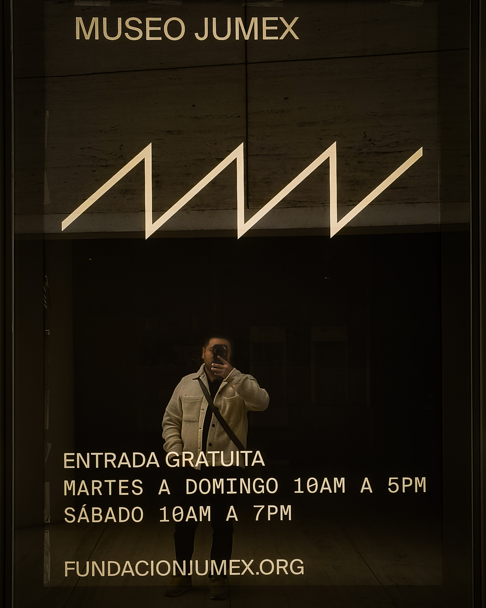
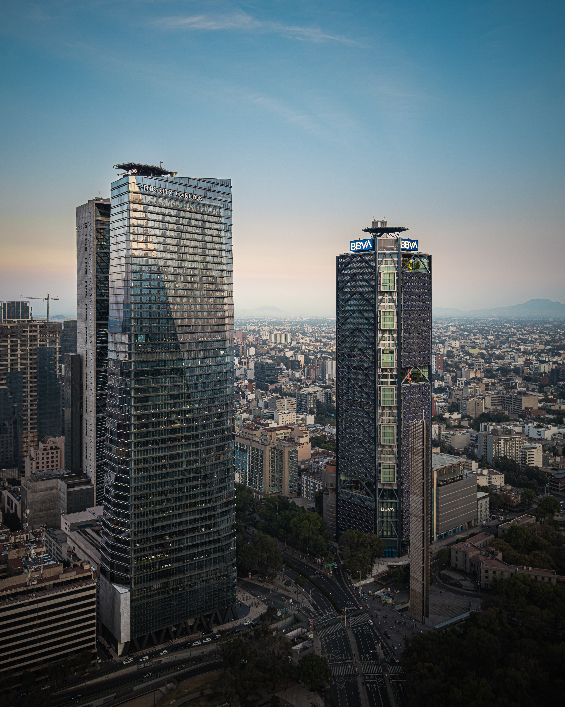
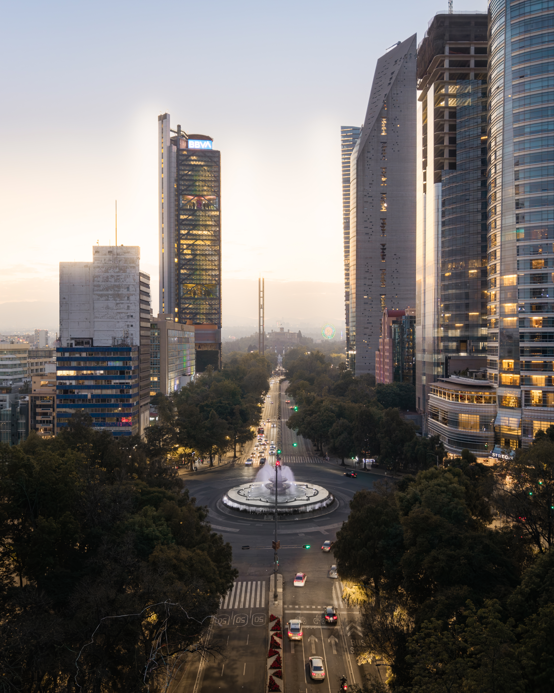

Jorge Cruz
12/25


12/25
11/25

Arquitectura, historia y ciudad en movimiento: La Torre BBVA, la Torre Reforma y el Ángel de la Independencia, Iconos de la capital.#CDMX #REFORMA
10/25

Uno de los ejes urbanos mas importantes de la ciudad, donde la arquitectura se encuentra con la historia: La Torre BBVA, la Torre Reforma y las avenidas que conectan el corazon financiero de la capital. #arquitecturacdmx
10/25

La arquitectura no se mide solo en metros, se mide en como la habitan.
Arquitectura, historia y ciudad en movimiento: La Torre BBVA, la Torre Reforma y el Angel de la Independencia, Iconos de la capital. #CDMX